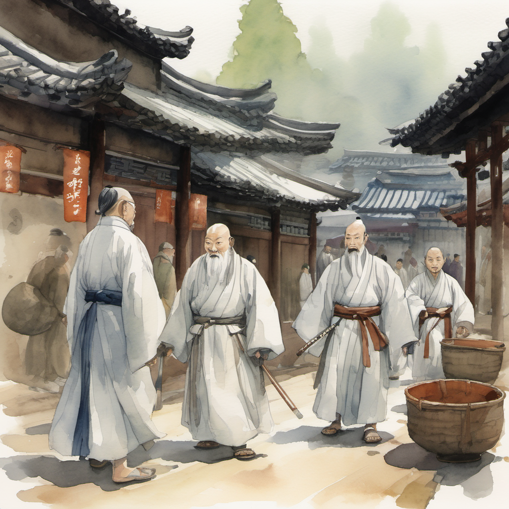
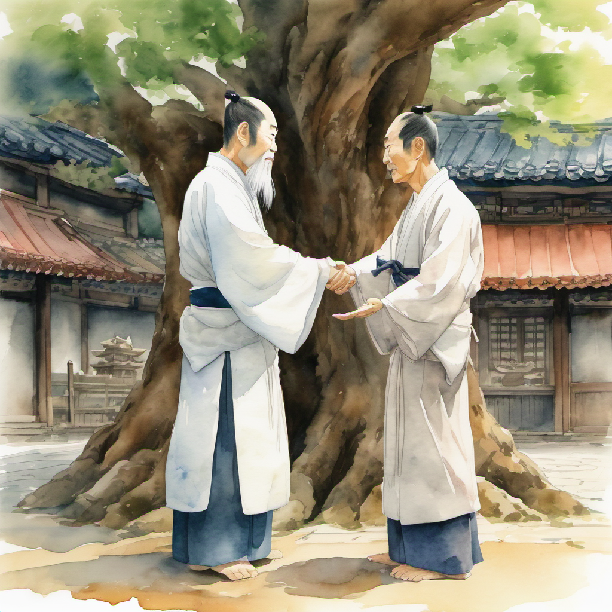
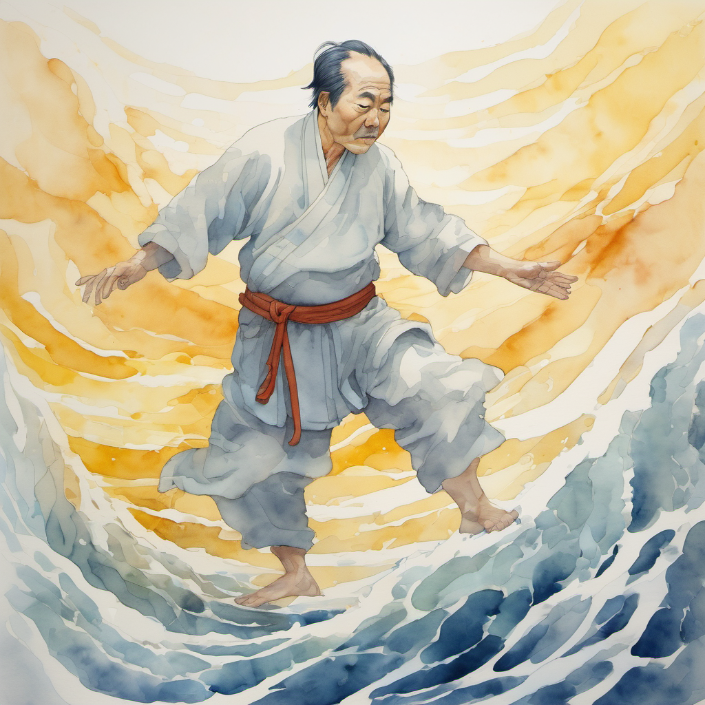
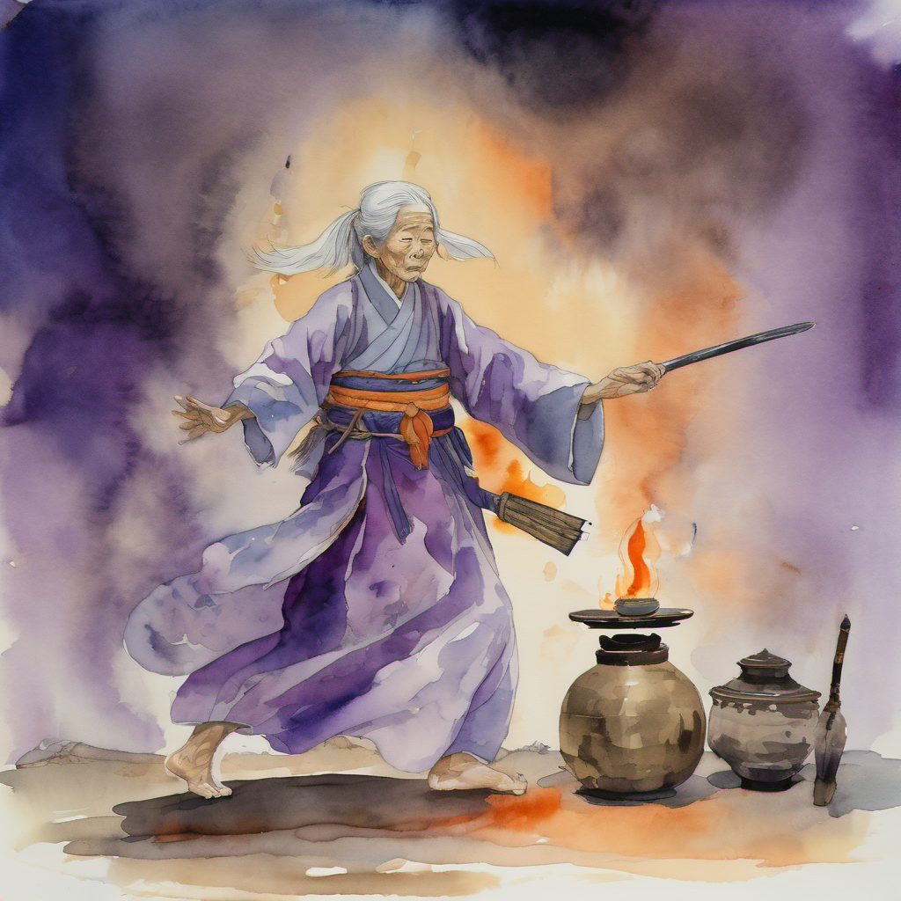
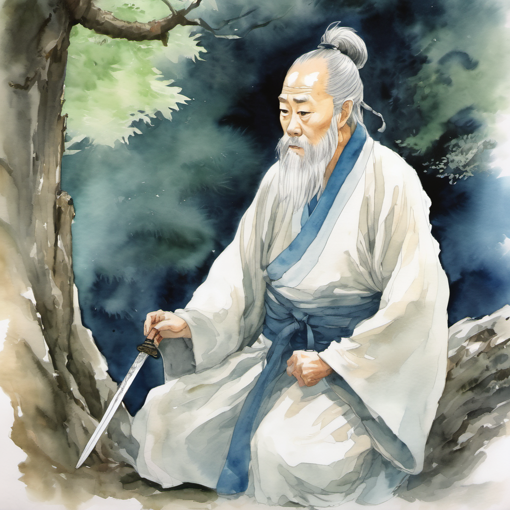
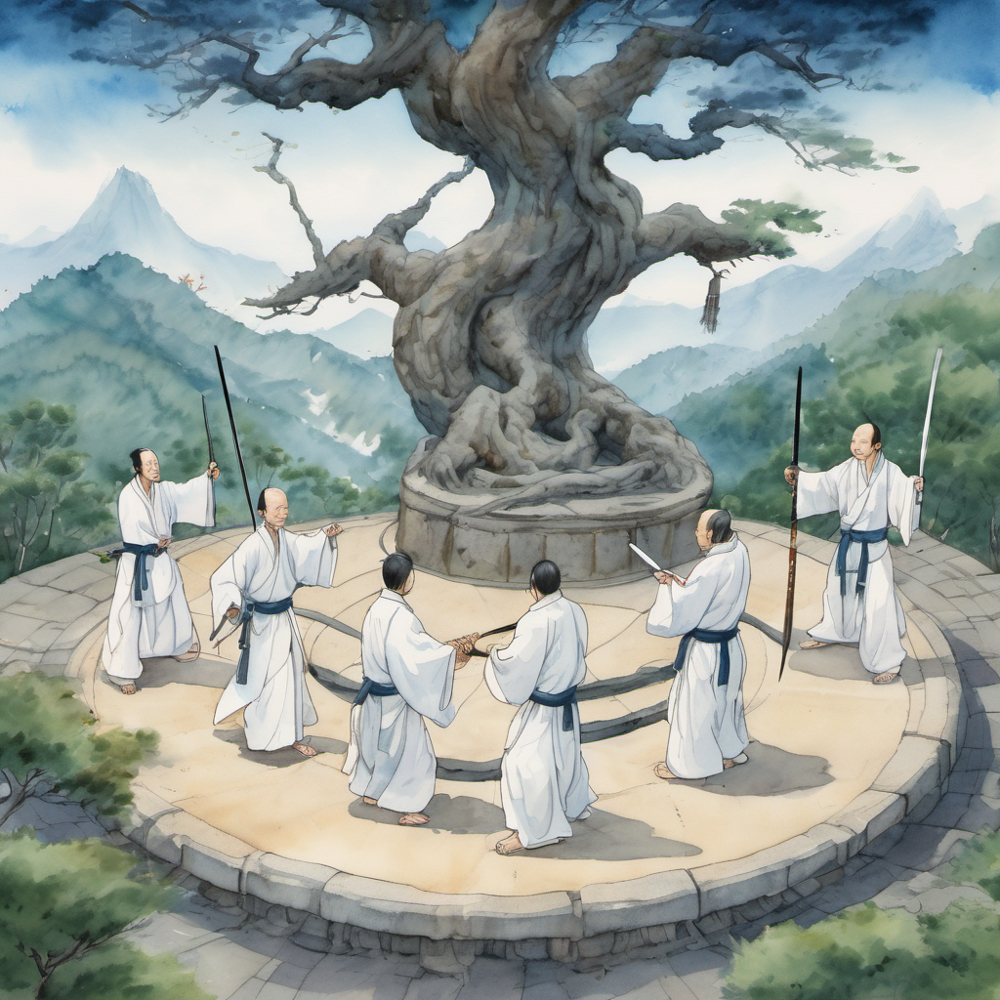
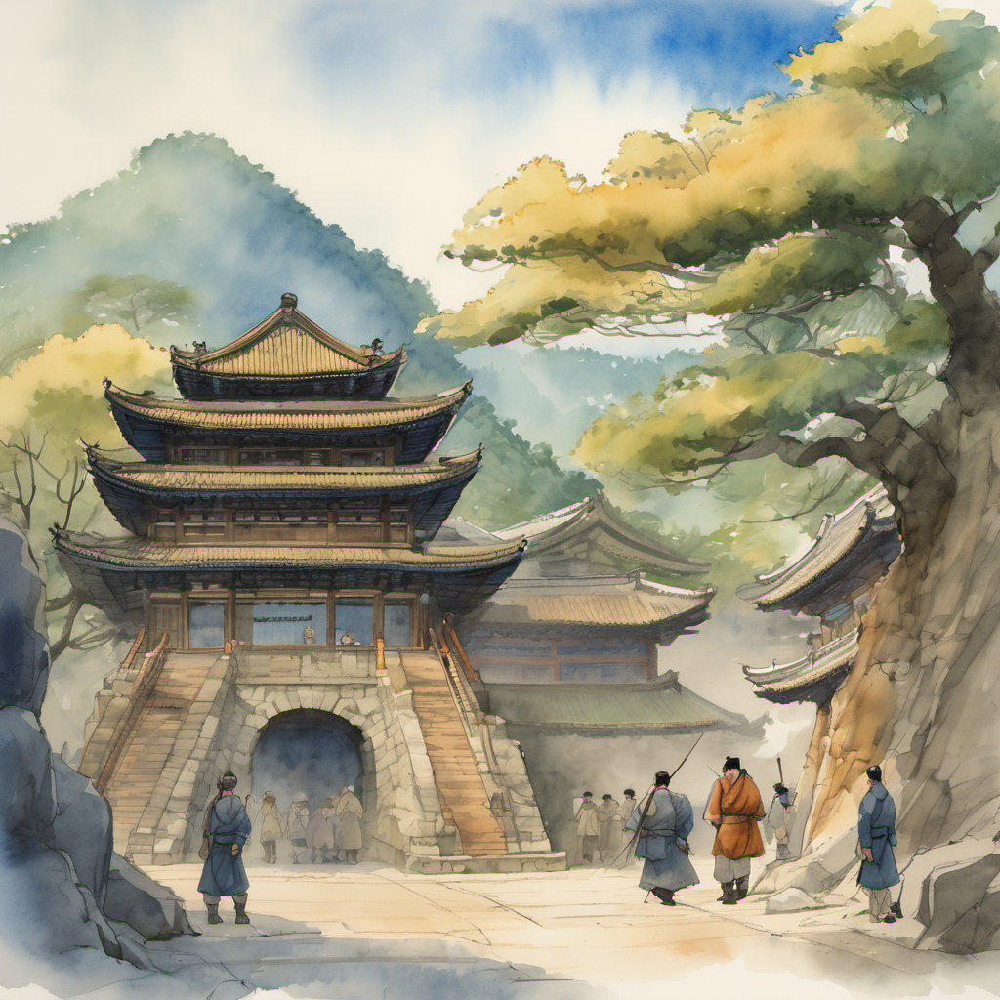
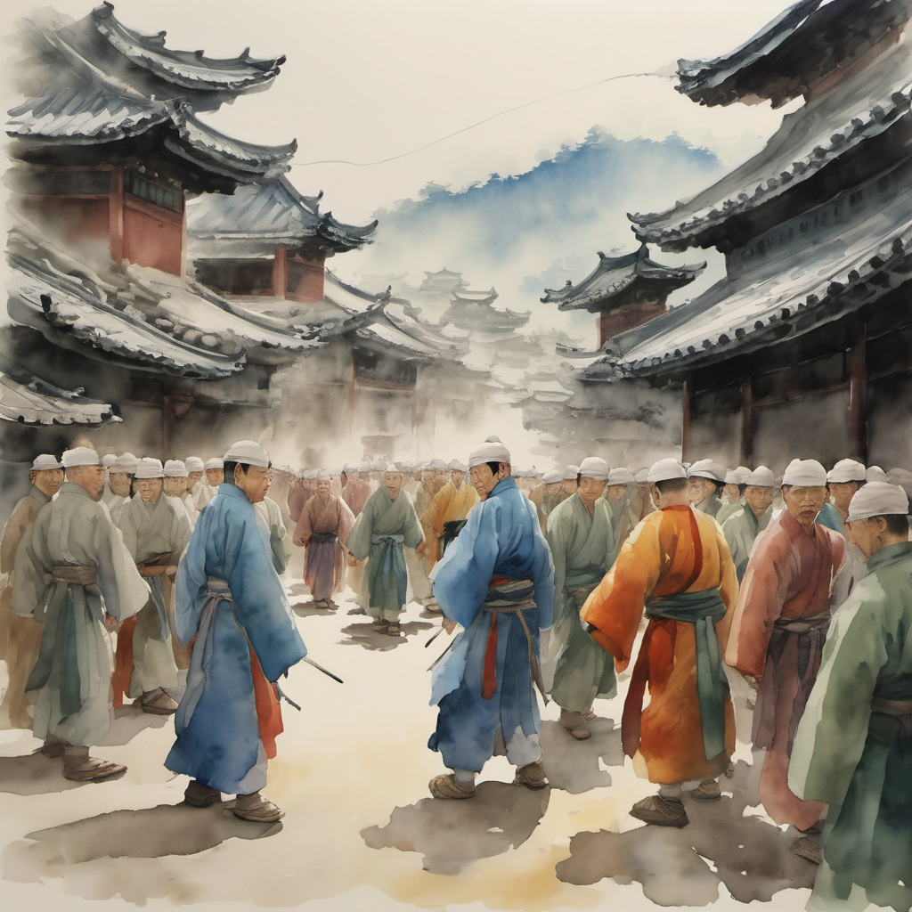

사절단 5인 도착

신단수에서 단군왕검 인증을 받은 다음 날, 무당파의 본 사절단이 개성에 도착했다.
사절단은 다섯 명이었다. 김용 선생의 의천도룡기에서 — 무당파의 — 본 사부 + 4대 제자의 본맥이었다. 본 사부는 60대 후반. 흰 수염 + 흰 도복 + 검집은 등에 가로로. 본 사부의 이름은 — 무당의 도성(道誠) — 이었다.
도성 vs 정주 — 포권의 예

도성이 — 시장의 한가운데 — 신단수 앞 — 광장에서 — 정주에게 포권의 예를 올렸다. 김용 풍 무당파의 본 사부가 — 대등한 예를 — 정주에게 올렸다는 것은 — 정주를 — 강호의 — 한 격 — 으로 — 인정했다는 의미였다.
정주도 — 한 번 — 포권의 예를 — 올렸다. 50대 노동자의 손이 — 이번에는 — 떨리지 않았다.
천하의 도를 어지럽힌다

김용 풍 의천도룡기에서 무당파가 명교를 멸하려 했던 본맥이 — 본 화에서 — 정확히 — 변형되어 — 등장했다. 무당파 = 정파의 본 맥. 정주 = 명교의 — 변형판.
월자의 작두 박자 — 1981년 부산

도성 — 첫 판단 수정

도성이 — 그 말을 — 듣고 — 잠시 — 침묵했다.
김용 풍 무당파의 본 사부가 — 자기 첫 판단 — 을 — 수정하는 — 그 — 본맥. 의천도룡기의 장삼봉이 — 장무기를 — 처음에 — 명교 후예로 — 보았다가 — 한 번 — 수정한 것과 — 같은 — 본 맥.
태극검 4방위 진형

4명의 청년 검수가 — 정주를 — 둘러쌌다. 동서남북. 그리고 — 동시에 — 검을 — 뽑았다. 4개의 검이 — 한 번에 — 뽑혔지만 — 4개 검이 — 정확히 — 같은 박자로 — 뽑혔다. 김용 풍 무당파 태극검의 본 진형 — 4방위 균형 — 의 본맥.
이방원 — 동쪽 전략

정주가 — 자기 무릎을 — 한 번 — 두드렸다. 무신화는 — 켜지 않았다. 무신화를 켜면 — 도성이 — 즉시 — 검을 — 뽑을 것이었다. 본 화의 시험은 — 무신화 없이 — 통과해야 — 하는 — 시험.
동쪽 한 걸음 — 7화로

태극검 진형이 — 작동했다. 4방위에서 — 4개 검이 — 정주를 향해 — 박자를 — 한 번 — 보냈다. 이 박자가 정주의 — 들쭉날쭉 박자를 — 강제로 — 균형으로 — 정렬한다.
정주는 — 동쪽 — 시장 입구 — 방향으로 — 한 걸음 — 갔다.
(2권 6화 끝 — 7화에서 진형 통과 본 합)